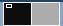

Panel inferior con diseño clásico
De izquierda a derecha en el polo sur nos encontramos con:
Iconos
{kind=link}
{kind=link}
Seguimos de excursión a través del polo sur, y al final del panel inferior, en la parte derecha del mismo nos encontramos:
{kind=link}
Cada vez que borras un archivo de tu ordenador, en realidad no desaparece del todo, sino que se guarda en la papelera. Si te posicionas con el ratón encima de este icono, sin hacer clic, te aparecerá un letrero que indica si hay algo dentro, y en este caso, el número de elementos que contiene.
La papelera se abre haciendo un solo clic encima del icono. Una vez que estás dentro, puedes ver los archivos y moverlos de nuevo a otra carpeta, o al escritorio en el caso de que quieras recuperarlos. Para ello, selecciona con un clic aquellos archivos que quieras rescatar y utiliza la opción copiar y después pegar o la técnica del arrastre para darles una nueva ubicación.
Si accedes a la parte derecha de la ventana y haces clic en el botón Vaciar la papelera podrás eliminar los archivos definitivamente. Es conveniente que lo hagas de vez en cuando para recuperar algo de espacio en tu disco.
{kind=link}
Áreas de trabajo o cambiador
Son esos cuadrados situados antes de la papelera . Representan varios escritorios o espacios de trabajo. Es como si tuvieras varias pantallas (o varias mesas) una junto a otra. Si quieres comprobar cómo funcionan, haz doble clic en la carpeta Equipo de tu escritorio. Ahora tienes una ventana abierta. Echa una ojeada al primer cuadro gris del panel inferior, el que representa tu primer escritorio, ahora hay un pequeño icono dentro. Bien, haz clic con el botón izquierdo en el siguiente cuadro gris. Tu segundo escritorio es igual que el primero, pero la ventana ha desaparecido.
{kind=link}
En realidad sigue ahí, pero solo lo verás si vuelves a hacer clic sobre el cuadrado del primer escritorio. Con el teclado también puedes cambiar de escritorio virtual. Mantén pulsadas las teclas Ctrl + Alt y presiona las flechas de navegación izquierda o derecha para visualizar uno u otro escritorio.

Si abres normalmente varias ventanas a la vez, estos espacios de trabajo te resultarán muy prácticos. Puedes mover ventanas de un espacio a otro haciendo clic con el botón derecho en la barra superior de cada ventana (la barra de título) o en las pestañas que representan las ventanas abiertas en el panel inferior del escritorio. En ambos casos aparecerá un menú desplegable con la opción Mover al área de trabajo de la derecha o Mover a otra área de trabajo.
{kind=link}
Cuando te hayas acostumbrado a usar un par de ellas puedes añadir más áreas de trabajo haciendo clic con el botón derecho sobre cualquiera de los cuadros grises y seleccionando el menú Preferencias. Debes añadir el número de áreas de trabajo que deseas por filas y por columnas.
{kind=link}
Ventanas abiertas
En principio, la parte central del panel inferior no parece contener muchas cosas, pero según vayamos abriendo iconos aparecerán más y más pestañas que indican las ventanas de programas que están funcionando en cada momento. En una mesa de trabajo atestada de papeles los que están encima ocultan a los de abajo. En el escritorio de Guadalinex ocurre algo similar. Si tenemos varios programas en marcha es posible que la ventana del último tape a las demás en el escritorio. Para volver a ver una ventana de las que estén cubiertas, haremos un clic en la pestaña del panel inferior que corresponda a esa ventana. También es posible pasar de una a otra pulsando la tecla Alt y sin soltarla presionar la tecla Tab.
{kind=link}
Respecto a las ventanas que vas abriendo en tu escritorio, vamos a contarte como poder manejarlas para que trabajes a gusto.
Ya te hemos hablado sobre esas ventanas que corresponden a los programas que tienes abiertos y que se van acumulando a modo de pestañas en el panel inferior de tu escritorio. Si vas haciendo clic con el botón izquierdo del ratón encima de esas pestañas comprobarás que puedes ir pasando de una ventana a otra respecto a los programas que tienes abiertos. Pero si haces clic encima de uno de las pestañas con el botón derecho del ratón te aparece un menú desplegable con opciones para manejar esas ventanas:
- Minimizar o desminimizar: la acción de minimizar te permite situar una ventana en la parte inferior del escritorio sin cerrarla completamente para poder utilizarla en otro momento. También puedes minimizar haciendo clic en el botón que tiene un guión en su interior situado en la esquina superior derecha de la ventana.
{kind=link}
- Maximizar o desmaximizar: con la acción de maximizar puedes agrandar una ventana para que ocupe todo el espacio del escritorio. También consigues maximizar haciendo clic en el botón con un cuadrado en el interior situado en la esquina superior derecha de la ventana.
{kind=link}
- Mover: si escoges esta opción el puntero del ratón se convertirá en una mano que te permite mover la ventana con el ratón hacia el espacio del escritorio que prefieras. Cuando ya hayas colocado la ventana, haces clic con el botón izquierdo del ratón y así fijas la nueva ubicación de esa ventana.

- Redimensionar: te permite cambiar el tamaño de la ventana por los bordes, pudiéndola hacer más estrecha o más pequeña.

- Siempre encima: puedes elegir que la ventana que tu quieras sea la que siempre esté por encima de las demás ventanas que tengas abiertas en el escritorio.
- Siempre en el área de trabajo visible: si marcas esta opción conseguirás que sea cual sea el área de trabajo en la que estás trabajando siempre aparezca esa ventana, ya que si no marcas esta opción, solo aparecerá en el área de trabajo en la que la hayas abierto.
- Sólo en esta área de trabajo: si marcas esta opción conseguirás que la ventana sólo se visualice en esa área de trabajo.
- Mover al área de trabajo de la derecha: te permite mover la ventana del programa al área de trabajo situada inmediatamente a la derecha del área donde en principio abriste la ventana.
- Mover a otra área de trabajo: al igual que la opción anterior, te permite mover la ventana a otra área de trabajo, pero en este caso puedes elegir tu el área de trabajo que prefieras, no tiene que ser la que está situada a la derecha.
- Cerrar: para cerrar definitivamente esa ventana. También puedes cerrar la ventana haciendo clic en el botón con forma de cruz situado en la esquina superior derecha de la ventana.
{kind=link}
Anterior: Miro lo que hay en el panel superior
Siguiente: Panel inferior con diseño moderno